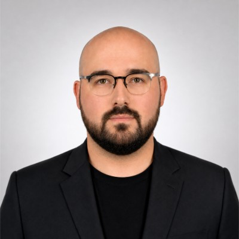

Virtualization
VMware ESXi, vCenter, HPE SimpliVity, Hyper-V
SENIOR INFRASTRUCTURE & SYSTEMS CONSULTANT
9+ yıllık deneyimle sanallaştırma, network security, load balancing, backup & disaster recovery, monitoring ve sistem operasyonları üzerinde çalışıyorum.

Kurumsal BT altyapıları, sanallaştırma, ağ güvenliği ve yüksek erişilebilirlik çözümlerinde 9+ yıllık deneyime sahibim. VMware vSphere, Veeam Backup & Replication, F5 BIG-IP, FortiGate, Palo Alto, Windows Server ve Linux platformlarında tasarım, devreye alma ve operasyon tecrübesine sahibim.
Finans sektöründe PCI DSS uyumlu altyapıların tasarımı, load balancer ve firewall yönetimi, merkezi loglama/monitoring ve disaster recovery süreçlerinde aktif rol alıyorum.
Günlük operasyon ve proje çalışmalarımda aktif kullandığım teknoloji grupları.
VMware ESXi, vCenter, HPE SimpliVity, Hyper-V
F5 BIG-IP, FortiGate, Palo Alto, VLAN, NAT, VPN, IPsec, SD-WAN
Windows Server, Active Directory, DNS, DHCP, GPO, IIS, Microsoft 365, Linux
Veeam, Splunk, PRTG, Zabbix, QNAP NAS
Operasyon, çözüm tasarımı ve teknik danışmanlık sorumlulukları.
Kurumsal altyapı teknolojilerinin tasarım, iyileştirme ve dönüşüm süreçlerinde teknik danışmanlık; yüksek erişilebilirlik, güvenlik ve iş sürekliliği odaklı çözüm tasarımı.
Sanallaştırma, backup/disaster recovery, F5 BIG-IP, güvenlik altyapıları, PCI DSS mimarileri ve merkezi izleme/loglama süreçlerinde çözüm tasarımı.
Finansal sistemleri destekleyen fiziksel ve sanal sunucu altyapılarının operasyon, bakım ve süreklilik süreçleri.
Windows Server, Active Directory, VMware, Veeam, FortiGate, Microsoft 365, HP/Aruba, Zabbix ve PowerShell operasyonları.
Üretim ortamında güvenlik, erişilebilirlik ve operasyonel görünürlük hedefleriyle hayata geçirilen projeler.
Host/path bazlı trafik yönlendirme, erişim kontrolü ve SSL/TLS yönetimi ile backend servislerin tek HTTPS giriş noktası arkasında merkezileştirilmesi.
Servis hesaplarının parola ve hesap geçerlilik sürelerinin PRTG custom sensörleriyle otomatik izlenmesi ve eşik bazlı uyarı mekanizmaları.
Palo Alto, FreeRADIUS, privacyIDEA ve LDAP ile parola + OTP tabanlı merkezi authentication akışının devreye alınması.
Firewall, sunucu, Active Directory, File Server, backup ve monitoring bileşenlerinden oluşan kurumsal altyapının kurulması.
Önlisans · 2015—2017 · Kocaeli, Türkiye
Infrastructure, systems, network veya security konularında benimle iletişime geçebilirsiniz.